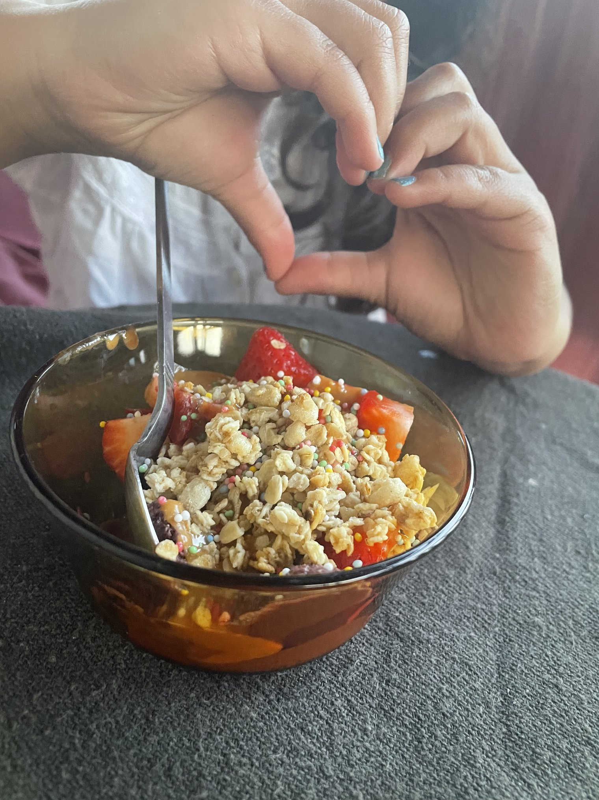

Bol de yogur con fruta y granola
Ingredientes
1×
- 150 g de yogur
- 4 fresas
- ½ melocotón o mango
- 3 cdas de granola
- fideos de azúcar de colores

Preparación
Paso 1
Poner en un bol 150 g de yogur.
Paso 2
Añadir 4 fresas troceadas y ½ melocotón o mango en dados.
Paso 3
Cubrir con 3 cdas de granola y, si se quiere, unos fideos de azúcar de colores.